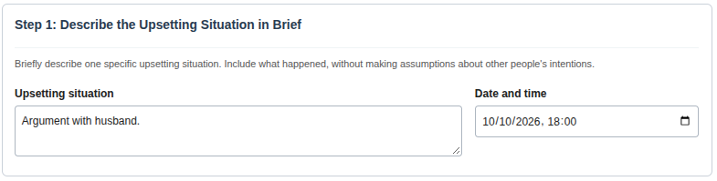
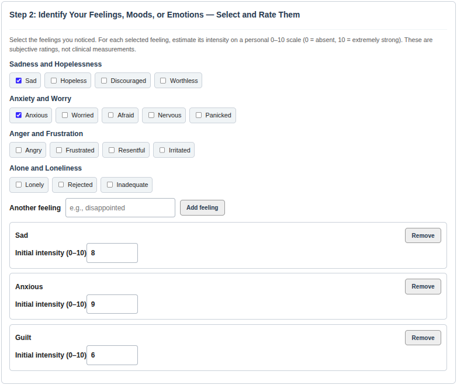
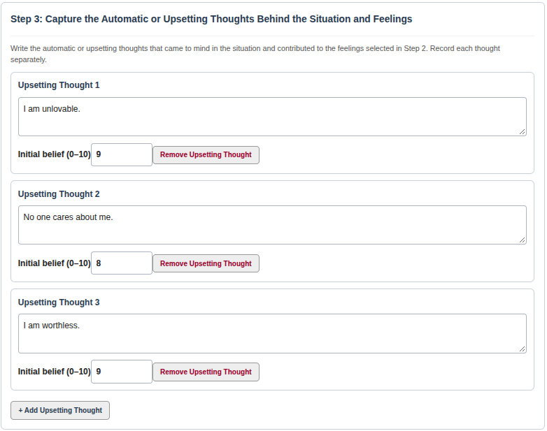
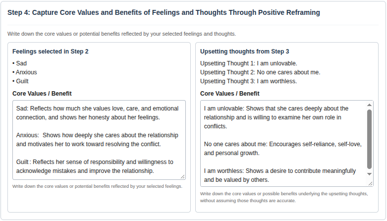
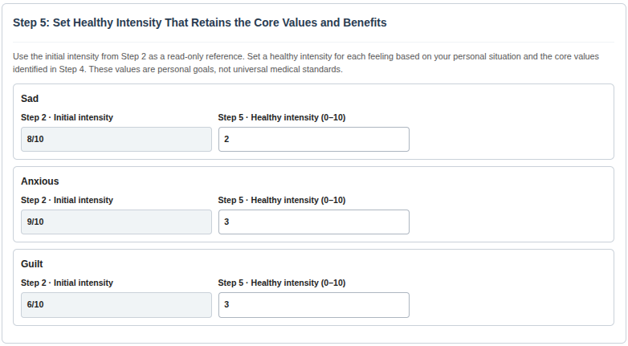
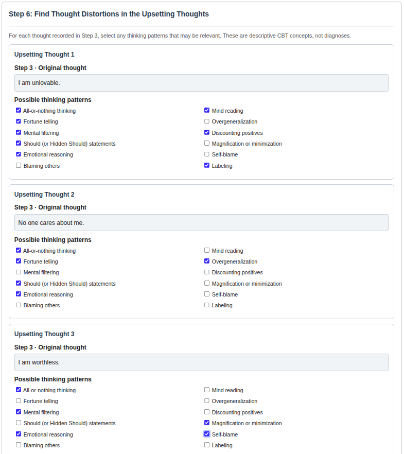
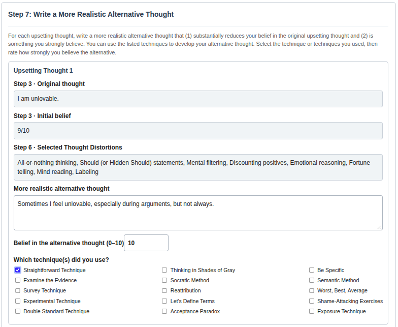
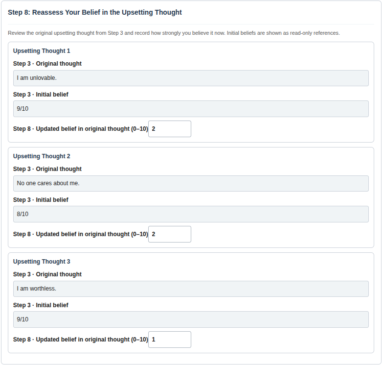
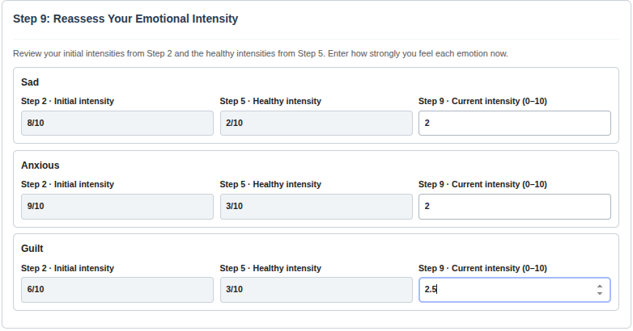
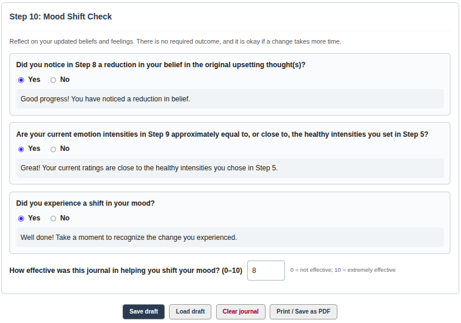

Keeping ourselves emotionally healthy is becoming a challenging problem in today’s times. It is important for every individual to take control of their emotional health, as it is in our hands. This note attempts to show a way to take that control using a widely recognized and effective tool for emotional health called “Cognitive Behavioral Therapy.”
In particular, the note covers the following:
Cognitive Behavioral Therapy and its working principles
Basic understanding of feelings, moods, and emotions
Negative thoughts and thought distortions
Quantification of feelings, moods, and emotions, and understanding their healthy values
Step-by-step guidance on writing a Mood Shift Journal, a crucial component of taking control of our emotional health
Understanding and resolving relationship conflicts using the Conflict Resolution Journal and the DEPICT Rule
Talks & Presentations
Keeping Ourselves Emotionally Healthy: A Cognitive Behavioral Therapy Approach
Invited talk · Sept 19, 2026
Delivered as part of the AICTE Training and Learning (ATAL) Academy Faculty Development Programme (FDP) on “Circular Economy and Waste-to-Energy Solutions for Sustainable Urban Development.”
Venue: UKF College of Engineering and Technology, Parippally, Kollam, Kerala.
Covered the ideas on this page — CBT fundamentals, understanding negative thoughts and thought distortions, and how to write a Mood Shift Journal and Relationship Journal.
1. About Me: My Journey Toward Exploring Cognitive Behavioral Therapy
Hello Everyone, my name is Dileep Kumar. I am currently working in an automotive industry, and I hold a Ph.D. in Electrical Engineering. Professionally, I am an Electrical and Electronics Engineer. However, you may be wondering how I came to write a note in a non-technical area. The answer lies in my personal journey. Since childhood, I have been a very emotional person. During my Ph.D., I faced challenges related to emotional health, including depression and anxiety. Such challenges are quite common among Ph.D. scholars. I tried medication, but it worsened my condition and created additional health concerns. I was looking for a way forward without relying on medication.
One day, I discussed emotional health with my Ph.D. supervisor, and
he shared a note on Cognitive Therapy. While that note did not help
much directly, it sparked my curiosity to explore the area
further. Fortunately, I discovered the book Feeling Good: The New
Mood Therapy[1] by Dr. David
Burns, Professor Emeritus at Stanford University School of
Medicine. The book presents Cognitive Behavioral Therapy (CBT) as a
practical tool and is widely recognized for helping people deal with
emotional health challenges. Reading his books, participating in a
Feeling Good Book Club,
and meeting weekly with fellow members to practice these techniques
became a parallel journey alongside my Ph.D. (My sincere gratitude
to my friends, Ms. Dea Kristensen and Mr. Matt Lowrenz, for being
part of this journey for more than a year.) This practice helped me
immensely in completing my doctoral studies and rebuilding my
emotional resilience. I strongly believe that such approaches can
be highly beneficial in addressing emotional health issues, which
motivates me to share this note with all of you.
Another motivation comes from NCRB statistics. Around 13,000 to 14,000 students died by suicide in 2023, which translates to an average of about 36 deaths every day, with similar figures reported in subsequent years. Within the IIT system, approximately 12 to 13 students have taken their lives annually. I firmly believe that mental health is one of the key factors behind many of these tragedies. If you look closely at many of these individuals, you will often find that they were kind, honest people with strong moral values who genuinely cared about others. Yet, silently, they disappeared from this world because challenges that may seem minor from the outside felt overwhelming to them.
I hope this contribution will be helpful to some of you who may be experiencing emotional distress or relationship conflicts, which are often among the leading causes of emotional suffering. If this note can help even a few people navigate difficult emotions, strengthen their relationships, or regain hope during challenging times, it will have served its purpose. Thank you for reading this note, and let us begin.
Tap or click any figure on this page to view it full size.
Here I listed some typical negative thoughts that many people experience during different stages of life:
I am not good enough.
This bad thing always happens to me.
I am not a good student, parent, spouse, son, or daughter.
I should not do this or that.
My spouse, child, parents, or others should not behave this way.
I have achieved nothing meaningful in life.
I could not be able to do anything worthy in this world.
There is something wrong with me or with others.
My relationships with others will never improve. OR I am stuck in my relationships. (Note: These thoughts often persist until the underlying relationship conflicts are resolved. This note explains practical ways to address and resolve those conflicts.)
I just want to know your reflection on the following questions:
Q1: Have you ever experienced these thoughts or similar to them?
Answer: Most likely, Yes.
Q2: Do you think your family members, friends, or colleagues have experienced similar thoughts?
Answer: Most likely, Yes.
Q3: Have these thoughts ever caused emotional distress or triggered feelings like sadness, anger, frustration, and so on?
Answer: Most likely, Yes.
Q4: Was it difficult to handle such negative thoughts?
Answer: Most likely, Yes.
Q5: If you were emotionally healthy, would you be able to use your time and energy more effectively?
Answer: Yes. Better emotional well-being helps improve focus, productivity, decision-making, relationships, and overall quality of life.
If your answers to these questions lean towards “Yes”, then this note will be valuable — that is one of my key motivations for writing it. If your answers are mostly “No”, then you may not gain meaningful benefits from reading further.
3. Cognitive Behavioral Therapy (CBT) and Its Principles
Cognition
Cognition means thought, way of thinking, belief, perception, or interpretation.
Cognitive Behavioral Therapy (CBT)
Cognitive Behavioral Therapy (CBT) is a tool that helps tune our cognition, which in turn tunes our feelings, moods, and emotions. More specifically, CBT is:
A self-help, self-taught, self-practiced approach
Non-medicative (no medication required)
Biologically proven
Focused on addressing root causes, that is, thoughts, or ways of thinking.
Highly effective for depression, anxiety, and other forms of emotional distress
Principle of Cognitive Behavioral Therapy
CBT is based on a simple yet powerful principle (inspired by the ideas presented in Dr. David D. Burns’ books Feeling Good[1] and Feeling Great[2]):
Changing the way you think can transform the way you feel.
Q1: What primarily determines our feelings and moods?
Answer: Our cognition, that is, our thoughts, beliefs, perceptions, interpretations, and ways of thinking, plays a major role in determining how we feel. According to CBT, our emotions are influenced more by how we interpret events than by the events themselves.
Q2: Do our feelings and moods influence the way we think?
Answer: Yes, to some extent. Our emotional and physical state can affect our thought patterns. For example, when we are physically unwell, tired, or under significant stress, we may be more likely to have upsetting thoughts. Similarly, treatments such as medication for depression may alter brain chemistry, which can improve mood and support healthier thinking patterns.
Q3: Do circumstances determine our feelings and moods?
Answer: According to CBT, circumstances alone do not directly determine how we feel. Rather, our interpretation of those circumstances largely shapes our emotional response. Two people can experience the same situation yet react very differently because they think about it differently. For example, challenges such as poor health, financial difficulties, or relationship conflicts do not automatically create emotional distress. Instead, our thoughts, beliefs, and interpretations of a situation are the primary drivers of our emotional reactions and overall feelings and moods.
Q4: What happens when we become upset?
Answer: According to CBT, when we are upset, our thinking often becomes dominated by negative thoughts [1].
Q5: What is the nature of upsetting negative thoughts?
Answer: According to CBT, upsetting negative thoughts are often distorted [1]. Section 8.1 describes the 12 kinds of cognitive distortions that exist in typical negative thoughts.
Q6: Are there any quotes that support the CBT principle?
Answer: Yes, the following quotes, mentioned in [1], support CBT:
Epictetus (about 2000 years ago): “People are disturbed not by things, but by the views we take of them.” [10]
Shakespeare (from Hamlet): “For there is nothing either good or bad, but thinking makes it so.”
Lori Deschene, on Buddha’s statement: thoughts fuel emotions — if you don’t like what you’re feeling, step back and examine what you’re thinking.
4. Understanding Feelings, Moods, and Emotions
This section defines Feelings, Moods, and Emotions in detail. The definitions are compiled and adapted from Dr. David Burns and his book Feeling Good: The New Mood Therapy[1].
4.1 Definitions of Feelings and Moods
Feelings and moods are mental states associated with our behavioral and social responses.
Figure: The nine typical negative feelings and moods.
We can remember typical negative feelings/moods using the word “PH(F)ANTASIZED” — each starts with one of its letters, as depicted in the above image. Depression and hopelessness belong to one category of feelings, while panic, anxiety, and nervousness belong to another related category of feelings. Depression and anxiety are two major challenges in mental health, so let us first define and understand them.
4.2 Definition of Depression and Anxiety
1. Depression or Hopelessness
You tend to think that:
You are a failure, not good enough, have lost your value, or there is something fundamentally wrong with you. Depression
Your situation will never improve, your problems will never be solved, and your suffering will continue indefinitely. Hopelessness
2. Nervousness, Anxiety, or Panic
You tend to think that:
Something bad is about to happen, and you are unsure how it will turn out. Nervousness
Something wrong is about to happen, and you may not be able to cope effectively. Anxiety
You are in immediate danger, losing control, or something catastrophic is happening. Panic
Q1: Do you believe that depression and anxiety are a social stigma?
My view: Many people do believe they are. This is often an automatic response that develops over time through societal conditioning. Many people do not know the definitions of these terms and are quite ignorant about their actual meanings. If people understand their definitions and meanings, they may be less likely to consider them a stigma.
Q2: Do you believe that depression and anxiety are bad feelings we should never feel?
My view: I do not think so. If life has placed you in situations where you have failed repeatedly, it is understandable to feel like a failure or even to feel worthless. If you have used your mind repeatedly to solve a difficult problem but still could not find a solution, it is understandable to think, “Something may be wrong with my brain.” If you have tried repeatedly to change a situation and nothing seems to work, it is natural to experience a sense of hopelessness.
In the case of anxiety, if you perceive that you are in danger or that something terrible is about to happen, anxiety can make you more vigilant and motivate you to protect yourself from danger. This instinct to protect ourselves reflects self-care and self-love. Our instinct for self-preservation reflects the fundamental value we place on our own lives.
Therefore, I believe it is important to allow ourselves to experience genuine emotions rather than immediately judging them as negative or undesirable. Being honest about what we feel can reflect self-awareness, authenticity, and a willingness to understand ourselves.
The major thinking challenges I can see here are:
We start believing in such negative thoughts a lot.
We start thinking in a black-and-white way.
We start discounting the positives and overgeneralising.
We start criticising ourselves harshly, and become rigid and judgemental towards ourselves.
We unconsciously label ourselves as “bad.”
We do not try to find the evidence or look for alternative perspectives.
We do not conduct a survey or reality check to test the accuracy of our negative thoughts.
This note provides a practical way to address these thinking challenges.
4.3 Physical Health vs. Mental Health: Understanding the Difference
Q3: Do you believe that physical illnesses (such as fever and cold) and mental illnesses (such as depression and anxiety) are fundamentally different?
My view: Let us understand this concept using the snapshot shown below. The snapshot helps us compare physical health and mental health and highlights several important similarities and differences. When a person falls sick with a fever or cold, the physical body becomes ill, often due to wrong food (leading to infections) and other external factors such as climate changes. Similarly, our mental health can be affected by negative thoughts that emerge due to stressful life events, relationship conflicts, and other real-life challenges, most of which are also external factors. Just as food influences the health of the body, our thoughts significantly influence our mental and emotional wellbeing.
Figure: Comparison of physical health and mental health.
When people experience physical illnesses, they readily seek medical help and discuss their condition openly, without feeling embarrassed. In contrast, when people face mental health difficulties, many hesitate to talk about their struggles or seek support from counsellors, psychologists, or doctors due to stigma, misunderstanding, or fear of judgement. As a result, mental health problems often go unnoticed or untreated.
The main point I would like to emphasise here is that, just as our physical body can become unwell, our mental wellbeing can also suffer. In both cases, the external environment is often an important contributing factor. Therefore, we should show the same level of care, compassion, and concern for our mental health as we do for our physical health. Another important point is that many people mistakenly believe that mental health has little or no impact on physical health. Because of this belief, they may neglect their mental wellbeing. However, mental health also affects our physical health, and many chronic physical conditions, including thyroid disorders, diabetes, and other hormonal imbalances, are influenced by mental health challenges.
4.4 Depression and Anxiety: Medication vs. CBT and Their Effectiveness
Figure: Comparison of medication and CBT, and their effectiveness.
With medication, chemical changes in the body and brain help us feel better and emotionally healthy. CBT, on the other hand, directly tunes our thought processes — the root cause of the problem — which ultimately tunes our emotions, feelings, and moods, leading to changes in brain and body chemistry as well. Medication has side effects on both body and brain, and costs money. CBT has no side effects, can be practiced alone, and is inexpensive. Medication does not act on the actual cause of the problem; CBT does, reducing the chance of relapse. As shown in the above figure, patients treated with cognitive therapy experienced marked clinical improvement or complete remission at a rate more than three times that of patients treated with medication.
4.5 Definitions of Anger, Frustration, Guilt, Embarrassment, Inferiority, and Shyness
3. Anger: that others are acting selfishly, treating you unfairly, or deliberately taking advantage of you.
4. Frustration: you tend to tell that people or situations should have turned out the way you expected or wanted.
5. Guilt: you tend to tell that you have done something wrong, failed to meet your own standards, or acted against your core values.
6. Embarrassment: you tend to tell that you appeared foolish, incompetent, or awkward in front of others, and they will look down on you.
7. Inferiority: you tend to tell that you are not as capable, successful, or worthy as other people, or not as good as you think you should be.
8. Feeling Trapped: you tend to tell that you have no choice but to comply with the demands or expectations of family members, friends, or a partner.
9. Shyness: you tend to tell that others will notice your nervousness or insecurity and judge you negatively because of it.
Note: Anger and frustration often play a significant role in relationship conflicts.
4.6 Understanding Emotions: Energy in Motion and Motivation
Biologically, emotions are brain–body responses that motivate and prepare us for action. They can be described metaphorically as “Energy in Motion and Motivation.” Emotions arise as the brain interprets information and predicts its meaning and possible consequences, helping us respond accordingly. The following image illustrates how emotions arise and change through five steps.
Figure: The image idea is adopted from “A Brain User’s Guide to TEAM Therapy,” by Dr. Mark Noble, Professor of Genetics and Neuroscience, University of Rochester Medical Center [4].
Step 1: The brain receives information from both inside the body and the outside world. For example, you suddenly notice an object lying on the ground that looks like a snake.
Step 2: The brain rapidly and largely automatically interprets this information to make sense of what is happening and predicts what might happen next. For example, based on the object’s shape and appearance, your brain may interpret it as a snake, predict danger, and trigger an initial feeling of fear.
Step 3: Based on its interpretation and prediction, the brain generates emotions as motivations that prepare and push you to respond accordingly, often rapidly and without conscious awareness. Emotions are not simply conclusions you consciously arrive at; they are brain–body responses influenced by what the brain interprets as happening and predicts might happen next. For example, when the brain predicts danger from a snake, fear can motivate you to move away (flight) or defend yourself (fight), while the body prepares for action through changes such as increased heart rate, faster breathing, and heightened alertness.
Step 4: Throughout this process, the brain continually performs a kind of quality control by comparing its interpretations and predictions with incoming information and updating them when necessary. This evaluation occurs alongside the emotional response. For example, after looking more carefully, the brain determines that what initially appeared to be a snake is actually a rope.
Step 5: When the brain’s interpretation or prediction changes, the emotional response can change as well. If the original interpretation was mistaken, the brain may have generated an emotional response appropriate to that perceived situation. Once the brain recognizes that the object is a harmless rope rather than a snake, the prediction of danger changes, fear can rapidly subside, and a feeling of relief may follow.
Note: The words feeling, mood, and emotion are similar and are used interchangeably in practice.
5. Quantification of Feelings and Moods and Their Healthy Values
Figure: Understanding of quantification of feelings and moods using an example where a student has just taken an exam.
Consider a situation where a student has just taken an exam consisting of five questions. He knew the answers to Q1 and Q2 and attempted them well. He knew how to solve Q3 but made a mistake in his final solution. He could not answer Q4—although it was within the syllabus, he had not studied the material. Finally, Q5 was completely out of the syllabus.
Ultimately, the student passed the exam but received a lower grade than desired, leaving him feeling sad and slightly angry. Let us break down the roots of these emotions.
Why he is experiencing sadness:
He could not attempt Q4.
He made a preventable mistake on Q3.
He worries this lower grade will negatively impact his chances of getting into a good college.
He feels he failed to meet his parents’ expectations.
Why he is experiencing anger:
Q5 was out of the syllabus (anger with others → at the examiners).
He made a careless mistake on Q3 (anger at himself).
Now, let’s explore the underlying advantages of these emotional responses and highlight the positive core values they reveal about him:
Advantages and core values of his sadness:
Self-Love and Ambition: He cares deeply about himself and his future trajectory.
Family Connection: He values his family and cares about making them proud.
Drive for Improvement: His sadness serves as a powerful motivation to avoid repeating the same mistakes.
Advantages and core values of his anger:
Sense of Justice: He cares about fairness and integrity in the examination process.
Self-Accountability: He is willing to honestly acknowledge and take responsibility for his own shortcomings.
Quantification of Feelings and Emotions
Can we estimate the student’s emotional state using percentage breakdowns?
1. 100% Sad + 100% Anger
Ans: No.
Reasoning: 100% represents total emotional saturation—complete despair and unbridled rage. Feeling this level of sadness and anger would cause severe emotional distress, indicating a need for emotional support or counseling. Such an extreme reaction assumes that exam performance is the only thing in life that matters, completely discounting his other strengths and positive qualities. Realistically, he can reframe the outcome: making a mistake on Q3 is a normal human error, and Q5 being out of syllabus may have been intentionally included by examiners to evaluate how students respond to unfamiliar challenges.
2. 0% Sad + 0% Anger
Ans: No.
Reasoning: 0% represents the complete absence of sadness and anger. The student’s emotional response cannot be 0% because these feelings stem from meaningful values—such as caring deeply about his future college prospects, wanting to meet his parents’ expectations, staying motivated to avoid repeating mistakes, and valuing fairness in exams. Consequently, experiencing a non-zero emotional reaction is healthy, natural and expected.
3. Moderately Sad (50%) and Moderately Angry (30%)
Ans: Yes (Most Realistic).
Reasoning: This moderate, blended estimate accurately reflects a realistic emotional state, as it preserves the advantages and positive core values derived from his sadness and anger.
Q: What are healthy values of Feelings, Moods, and Emotions?
A feeling or emotion can be quantified on a scale of 0% to 100% to provide a rough estimate of its intensity.
A healthy value is an actual quantified emotional level that:
Is realistic and acceptable to you.
Preserves your self-worth, self-respect, and overall mental and physical well-being.
Aligns with your core values.
Helps you feel worthy and motivated.
Therefore, a healthy value for an emotion typically lies between 0% and 100%.
Note: Any deviation of feelings and emotions from this healthy value is the major cause of emotional pain and suffering, as it results in an undesired intensity of emotions. Later, we will discover that CBT helps tune our emotional states toward healthy levels, rather than the extreme ends of 0% or 100%.
6. Understanding Negative Thoughts
A negative thought is a thought that upsets you and makes you feel down.
It has the following properties:
The intensity of feelings/emotions related to the thought is far from their healthy values.
Your strong belief in it is the main cause of your emotional pain and suffering.
A negative thought is a clear statement, without feelings or emotions attached. For example:
I am not good enough.
I am unlovable.
I am boring.
I am a failure.
I am worthless.
This always happens to me.
Note: A negative thought should not start with “I feel” — “I feel bad” is a feeling, not a negative thought.
7. Positive Reframing
Positive Reframing is a technique that helps identify the advantages and core values behind negative thoughts and feelings by asking the following two questions [1]:
Question 1: What are the advantages or benefits of having these negative thoughts and emotions?
Question 2: What good qualities or core values do these negative thoughts and feelings reveal about who you are?
The following image lists the advantages and core values of typical negative feelings.
Figure: The idea is taken from the book Feeling Great[2]. There are multiple thought distortions in her thought, identified in Section 8.2.
Step 1: The husband complains that his wife does not finish household work on time and that he has to keep reminding her about things that need to be done.
Step 2: She feels criticized and argues back: “You don’t understand how much I do every day! You notice only what I haven’t done, not everything I do for this family.” He replies that he expects her to be more responsible, and their disagreement escalates into an argument.
Step 3: She fears that her relationship is on the verge of breaking down. As the argument continues, she worries that the ongoing conflicts may damage their marriage and that her husband may eventually leave her.
Step 4: She develops the automatic negative thought, “I am not a good wife.” She interprets her husband’s criticism as evidence that she is failing in her role as a wife.
However, she has many positive qualities. She is lovely, smart, caring, hardworking, honest, and successful in her career. Despite these strengths, she focuses on a single conflict and concludes, “I am not a good wife.” This automatic negative thought is a sweeping judgment about herself that she strongly believes in the moment, causing emotional distress. The disagreement may involve a genuine issue to resolve, but it does not define her worth as a wife. By focusing on the criticism, she overlooks her positive qualities and achievements.
Below are the 12 thought distortions that may be present in negative thoughts like hers. Each distortion is associated with a body part to make the concepts easier to remember.
8.1 The 12 Common Thought Distortions
The following figure illustrates the 12 types of thought distortions commonly found in negative thinking patterns. The motivation behind this depiction is simple:
The human brain tends to remember images more easily than text. When a concept is associated with an image, it acts as a form of “mental glue,” making the distortion easier to recall and recognise over time.
There is no additional intended meaning, analogy, or symbolic interpretation behind the illustrations. Their sole purpose is to aid learning and memory.
Figure: These 12 distortions are adopted from Feeling Good[1]. The cognitive distortions described below are based on concepts popularized by Dr. David Burns. The explanations and examples presented here are my own summaries and interpretations. For the original discussion, please visit [9].
1. All-or-Nothing Thinking — HAIR, which can be black, white, or a mix of both.
You think in black-or-white, all-or-nothing categories, with no shades of gray. When you fail at something, you tell yourself you’re a complete failure.
In the example: she sees herself as either a good wife or a bad wife, with no room for the possibility that she can be a good wife while having difficulties with household responsibilities.
2. Mind Reading — FOREHEAD, the outer layer near the brain, which we associate with reading minds.
You assume you know what others are thinking or feeling, without sufficient evidence. You may assume that someone is judging or disapproving of you without checking whether that is true.
In the example: she assumes her husband thinks she is a bad wife and is dissatisfied with her as a person, although he has complained specifically about household responsibilities.
3. Discounting the Positives — EAR, which sometimes only wants to hear what you’re willing to accept.
You dismiss positive facts or experiences as unimportant. When someone compliments you, you may assume they’re just being nice rather than accepting the compliment.
In the example: she dismisses her positive qualities: she is lovely, smart, caring, hardworking, honest, and successful in her career.
4. Mental Filtering — NOSE, which is selective about what it lets in — similar to a brain that filters out positives and focuses on one negative.
You focus on one negative detail and ignore the positive aspects of a situation, like a drop of ink discoloring an entire beaker of water.
In the example: she focuses exclusively on her husband’s complaint and overlooks her many positive qualities and contributions to the family.
5. Overgeneralization — MOUTH, which expresses the overgeneralized thought.
You conclude that a negative event will always happen or represents a never-ending pattern after it has happened only a few times.
In the example: she tells herself, “We always end up arguing. Nothing ever goes right in our marriage,” even though not every interaction between them results in conflict.
6. Should Statements — SHOULDERS, associated with carrying responsibility and burdens.
You make yourself or others miserable with rigid “should,” “must,” or “ought to” statements. Self-directed shoulds can lead to guilt or shame, other-directed shoulds can lead to anger, and world-directed shoulds can lead to frustration. Hidden shoulds are implied rules, such as “I am a failure,” which may conceal the belief that “I should never fail.”
In the example: she thinks, “My husband shouldn’t criticize me” and “I should be able to manage everything perfectly.” She may also interpret her difficulties as proof that she is failing to meet her own expectations of what a good wife should be.
7. Magnification and Minimization — LUNGS, which expand and contract, reminding us of how we can magnify or minimize the importance of events.
You blow things out of proportion or minimize their importance. This is sometimes called the “binocular trick”: an issue can look much bigger or smaller depending on how you view it.
In the example: she magnifies one disagreement about household responsibilities into evidence that she is failing as a wife, while minimizing her many positive qualities and contributions.
8 & 9. Other-Blame and Self-Blame — FINGERS, recalling the saying that when you point one finger at someone else, three point back at you.
Other-blame: you focus entirely on other people’s faults and overlook your own possible contribution to a problem.
In the example: she may blame her husband entirely for the argument, telling herself, “This is all his fault. He is the only one who needs to change.”
Self-blame: you take excessive responsibility for a problem and criticize yourself instead of examining the situation fairly and looking for solutions.
In the example: she blames herself entirely, telling herself, “This argument is happening because I am not a good wife,” without considering the circumstances or both partners’ contributions to the disagreement.
10. Emotional Reasoning — HEART, associated with our emotional experiences.
You treat your feelings as proof that your negative conclusions are true. For example, “I feel like a failure, so I must be a failure.”
In the example: she feels inadequate and distressed after the argument, so she concludes that she must be a bad wife.
11. Fortune Telling — PALM, evoking palm-reading as a traditional form of fortune-telling.
You predict that the future will turn out badly without sufficient evidence. For example, you assume that your problems will never be solved or that a relationship is destined to fail.
In the example: she predicts that their marriage will eventually break down because they are arguing, even though the future of their relationship is not yet determined.
12. Labeling — ABDOMINAL, imagined as a place where a sticker carrying a negative label is attached.
You label yourself or others globally instead of describing a specific behavior or difficulty. Rather than saying, “I did something wrong,” you conclude, “I am a bad person.”
In the example: she labels herself by concluding, “I am not a good wife,” instead of recognizing that she and her husband are experiencing a disagreement about household responsibilities.
8.2 Identifying Thought Distortions in Negative Thoughts
Figure: Short forms of the 12 thought distortions, for quick identification.
This figure serves as a quick-reference guide for identifying cognitive distortions within negative thoughts. The left panel lists the 12 common thought distortions and assigns a short abbreviation to each one. These abbreviations make it easier to analyse thoughts without having to repeatedly write the full distortion names.
The right panel demonstrates how a single negative thought is often influenced by multiple thought distortions at the same time. For example, the thought “I am unlovable” is not caused by a single distortion but may involve All-or-Nothing Thinking (AN), Mind Reading (MR), Discounting the Positives (DP), Mental Filter (MF), Hidden Shoulds (HS), Emotional Reasoning (ER), and Labeling (LB).
Identification of Thought Distortions in Some Negative Thoughts
I am not a good wifeAN, HS, DP, MF, LB
I am unlovableAN, MR, DP, MF, HS, ER, LB
I am not good enoughAN, DP, MF, OV, HS, MM, SB, LB
9. Mood Shift Journal
Use the
interactive Mood Shift Journal to complete the ten
steps in your browser, or download the HTML file for offline
use.
The Mood Shift Journal is
an independently developed interactive CBT reflection tool inspired in
part by Dr. David
D. Burns' Daily Mood
Journal[6].
Writing a Mood Shift Journal can help us examine upsetting thoughts, understand the feelings associated with them, and move toward healthier emotional states. The following 10 steps explain how to use the journal. The examples below illustrate the process through a single relationship situation.
Tip: Complete the interactive journal in your browser or download and print it to write by hand. The example ratings below use the same 0–10 scale as the Mood Shift Journal (for example, 8/10 means an intensity of 8 out of 10).
9.1 Ten Steps Involved in Writing a Mood Shift Journal
Step 1: Describe the Upsetting Situation in Brief
Briefly describe the upsetting situation that triggered your feelings and thoughts. Address one situation at a time, and record its date and time. You can refer to The Mood Journal: Instructions for Use by Dr. Fabrice Nye [11].
Example
“Argument with husband.”
Date: 10.10.2026, Time: 1800 hours

Step 2: Identify Your Feelings, Moods, or Emotions — Select and Rate Them
Identify the feelings, moods, or emotions triggered by the situation. Select those that apply and rate their initial intensity. In the interactive journal, select from the listed feelings or add another feeling as needed. See [11].
Example
Emotions [Triggered by the situation]
Initial Intensity (0–10)
Sad
8/10
Anxious
9/10
Guilt
6/10
Defective
8/10
Lonely
9/10
Self-conscious
8/10
Hopeless
7/10
Frustrated
6/10
Angry
7.5/10
Feeling Trapped
8/10

Step 3: Capture the Automatic or Upsetting Thoughts Behind the Situation and Feelings
Identify the automatic or upsetting thoughts associated with the situation and rate your initial belief in each. Do not repeat feelings here. Consider the emotions selected in Step 2 and ask yourself: “What am I telling myself about this situation that is making me feel this way?”
Example
Upsetting Thought
Initial Belief (0–10)
I am unlovable.
9/10
No one cares about me.
8/10
I am worthless.
9/10
I am stuck in a bad relationship.
9/10
I should not have married him.
8/10
I am a bad wife.
9/10

Step 4: Capture Core Values and Benefits of Feelings and Thoughts Through Positive Reframing
As described in Section 7, write down the core values or potential benefits reflected by the feelings selected in Step 2 and the upsetting thoughts recorded in Step 3. Consider these questions:
Question 1: What are the advantages or benefits of having these upsetting thoughts and emotions?
Question 2: What good qualities or core values do these upsetting thoughts and feelings reveal about who you are?
Example
Feeling
Core Values / Benefit
Sad
Reflects how much she values love, care, and emotional connection, and shows her honesty about her feelings.
Anxious
Shows how deeply she cares about the relationship and motivates her to work toward resolving the conflict.
Guilt
Reflects her sense of responsibility and willingness to acknowledge mistakes and improve the relationship.
Defective
May reflect her desire for self-improvement, personal growth, and becoming a better partner.
Lonely
Shows that love, companionship, and emotional connection are deeply important to her.
Self-conscious
Reflects her concern for dignity, self-respect, and how her actions affect others.
Hopeless
Highlights how important the relationship is to her and her desire for meaningful change.
Frustrated
Reflects her determination to resolve problems and improve the situation rather than give up.
Angry
Reflects her sense of fairness, justice, and self-respect, helping her recognize unmet needs.
Feeling Trapped
Reflects her desire for freedom, independence, and the ability to make choices that protect her well-being.
Upsetting Thought
Core Values / Benefit
I am unlovable.
Shows that she cares deeply about the relationship and is willing to examine her own role in conflicts.
No one cares about me.
Encourages self-reliance, self-love, and personal growth.
I am worthless.
Shows a desire to contribute meaningfully and be valued by others.
I am stuck in a bad relationship.
Shows she has a clear vision of what a healthy relationship should look like.
I should not have married him.
Reflects a desire to make wise decisions and avoid future emotional pain.
I am a bad wife.
Shows she holds herself to a high standard and wants the best for the relationship.

Why positive reframing? Identifying the values and possible benefits behind a difficult feeling or thought can help you understand why it matters to you. You can retain those values while working toward a healthier emotional intensity in Step 5, without assuming the upsetting thought is true.
Step 5: Set Healthy Intensity That Retains the Core Values and Benefits
After positive reframing in Step 4, set a healthy intensity for each feeling that retains the core values and benefits while helping you feel better (see the healthy value concept in Section 5). The initial ratings from Step 2 remain unchanged when you set these values.
Example: the table of Step 2, extended with healthy intensities
Swipe the table sideways if it does not fit your screen.
Emotions [Triggered by the Situation]
Initial (0–10)
Healthy Intensity (0–10)
Sad
8/10
2/10
Anxious
9/10
3/10
Guilt
6/10
3/10
Defective
8/10
2/10
Lonely
9/10
3/10
Self-conscious
8/10
2/10
Hopeless
7/10
1/10
Frustrated
6/10
2/10
Angry
7.5/10
1.5/10
Feeling Trapped
8/10
0/10

Step 6: Identify Thought Distortions in Your Upsetting Thoughts
For each upsetting thought recorded in Step 3, identify any of the 12 thought distortions that may apply. You can select more than one for each thought. The example uses the abbreviated names from the distortion list.
Example
Swipe the table sideways if it does not fit your screen.
Upsetting Thought
Initial (0–10)
Thought Distortions
I am unlovable
9/10
AN, HS, MF, DP, ER, SB, MR, LB
No one cares about me
8/10
AN, SS, ER, OV, ER, FT
I am worthless
9/10
AN, MF, ER, MM, SB
I am stuck in a bad relationship
9/10
HS, FT, ER, SB, OB, DP
I should not have married him
8/10
SS, FT, ER, MF, DP
I am a bad wife
9/10
LB, AN, HS, SB, OB, MM, OV

Step 7: Write a More Realistic Alternative Thought
For each upsetting thought, write a realistic alternative that (1) substantially reduces your belief in the original thought and (2) is something you strongly believe. Use the CBT techniques described in Section 9.2 as needed, select those used, and rate your belief in the alternative thought.
Example
Swipe the table sideways if it does not fit your screen.
Upsetting Thought
Initial (0–10)
More Realistic Alternative Thought
Belief in Alternative (0–10)
I am unlovable
9/10
Sometimes I feel unlovable, especially during arguments, but not always. [Straightforward Technique]
10/10
No one cares about me
8/10
That’s not entirely true. Many of my friends and relatives care about me a lot. [Examine the Evidence]
10/10
I am worthless
9/10
No, this event has nothing to do with proving that I am worthless. [Examine the Evidence]
10/10
I am stuck in a bad relationship
9/10
To some extent I feel stuck, but all relationships have conflicts, and another relationship might have similar challenges. [Socratic Method & Shades of Gray]
10/10
I should not have married him
8/10
It might be nice to be married to someone else, but similar conflicts could arise in another relationship as well. [Semantic Method & Shades of Gray]
10/10
I am a bad wife
9/10
This single incident does not prove I am a bad wife. If I try to define a “bad person,” I cannot, and feedback from others suggests I am actually a caring person. [Define Terms & Survey Technique]
10/10

Step 8: Reassess Your Belief in the Upsetting Thought
After writing an alternative thought in Step 7, record your updated belief in each original upsetting thought. Compare it with the initial belief recorded in Step 3.
Example
Upsetting Thought
Initial Belief (0–10)
Updated Belief (0–10)
I am unlovable
9/10
2/10
No one cares about me
8/10
2/10
I am worthless
9/10
1/10
I am stuck in a bad relationship
9/10
1/10
I should not have married him
8/10
1.5/10
I am a bad wife
9/10
1/10

Step 9: Reassess Your Emotional Intensity
Record the updated intensity of each feeling, and compare it with its initial intensity from Step 2 and the healthy intensity set in Step 5. If your feelings have not shifted as hoped, you can return to Step 7, try other techniques, and reassess. A specific numerical outcome is not required for the exercise to be useful.
Example
Swipe the table sideways if it does not fit your screen.
Emotions [Triggered by the Situation]
Initial (0–10)
Healthy (0–10)
Final Intensity (0–10)
Sad
8/10
2/10
2/10
Anxious
9/10
3/10
2/10
Guilt
6/10
3/10
2.5/10
Defective
8/10
2/10
1.5/10
Lonely
9/10
3/10
2/10
Self-conscious
8/10
2/10
1.5/10
Hopeless
7/10
1/10
1.5/10
Frustrated
6/10
2/10
1/10
Angry
7.5/10
1.5/10
1/10
Feeling Trapped
8/10
0/10
1/10

Step 10: Mood Shift Check
Review what changed after completing the journal. Use your ratings from Steps 8 and 9 to answer the following questions. If you are not satisfied with the change, you can try additional techniques in Step 7 or revisit the feelings in Step 2.
Question 1: Did you notice in Step 8 a reduction in your belief in the original upsetting thought(s)? Yes / No
Question 2: Are your current emotion intensities in Step 9 approximately equal to, or close to, the healthy intensities you set in Step 5? Yes / No
Question 3: Did you experience a shift in your mood? Yes / No
Question 4: How effective was this journal in helping you shift your mood? Rate its effectiveness from 0 to 10 (0 = not effective, 10 = extremely effective).
Example (illustrative responses)
Reduced belief: Yes. Emotional intensities close to healthy values: Not for every feeling. Experienced a mood shift: Yes. Journal effectiveness: 8/10.

9.2 Fifteen Frequently Used Techniques for Challenging Negative Thoughts
1. Straightforward Technique
For each negative thought, ask yourself:
Is this negative thought really true?
Do I really believe it?
Is there another way to look at the situation?
2. Examine the Evidence
Instead of assuming that your negative thought is true, examine the evidence for it.
Ask yourself:
What are the facts?
What do they mean?
3. Survey Technique
Conduct a survey to find out if your thoughts are realistic.
Ask yourself:
How do other people think and feel about this?
Ask some friends and get their feedback.
4. Experimental Technique
Do an experiment to test the validity of your negative thought, much like a scientist would test a theory.
Ask yourself:
Can I perform a test to see whether the negative thought is really true?
5. Double Standard Technique
Imagine a dear friend, very much like you, facing the same situation.
S/he expresses the same negative, harsh, and critical thought that you have been telling yourself.
Ask yourself: “Would I agree with her harsh and critical thought?”
Most likely, your answer will be NO, because such a harsh judgment is unfair and does not reflect the whole truth.
If you would not agree with her, then why accept it for yourself?
Instead, ask yourself: “What kind, supportive words would I offer to my friend?”
Then give those same words to yourself.
6. Thinking in Shades of Gray
See problems in shades of gray, not extremes.
Treat setbacks as partial successes or learning opportunities.
Focus on specific errors instead of labeling yourself a total failure.
7. Socratic Method
(Socrates, a Greek philosopher and the father of Western philosophy.)
Challenge your negative thoughts to uncover inconsistencies.
Example: If you think “I’m a failure at life”, ask:
Do I fail at some things, some of the time?
Or at all things, all the time?
The answer reveals the truth: No one fails at everything.
8. Reattribution (Other Contributing Factors)
Avoid blaming yourself entirely for a problem.
Consider the many contributing factors.
Ask yourself:
“What caused this problem?”
“What did I contribute?”
“What did others contribute?”
9. Let’s Define Terms
Labels like “inferior,” “fool,” or “loser” have no real meaning.
Foolish behavior exists, but “fools” do not.
Identity is not defined by mistakes. Only actions can be judged.
10. Acceptance Paradox
Don’t fight against your own self-criticisms.
Find truth in them and accept shortcomings with calm.
Remind yourself:
“It’s true I have many inadequacies.”
“In fact, very little about me couldn’t be improved considerably.”
This acceptance brings:
Inner calm, peace, and emotional steadiness.
It opens the door to growth.
11. Be Specific
Don’t say “I’m worthless” or “I’m defective.”
Focus on specific flaws, errors, or weaknesses.
Balance them with specific strengths.
Stick with reality, not sweeping labels.
12. Semantic Method
(Should statements: rigid, judgmental thoughts that fuel guilt, anger, or frustration.)
Avoid colorful or emotionally loaded words.
Instead of: “I shouldn’t have made that mistake.”
Say: “It would be preferable if I hadn’t made that mistake.”
This shift reduces guilt and judgment while keeping the thought constructive.
13. Worst, Best, Average
When a negative thought arises (e.g., “I’m a bad father/teacher”), don’t stop at the label.
Instead, list five qualities of a good father/teacher.
Rate yourself in each area from 0–100:
Worst → 0
Average → 50
Best → 100
Compare your ratings with others to see your strengths, weaknesses, and balance.
14. Shame-Attacking Exercises (Shame)
Help overcome shyness by deliberately doing something silly in public.
By facing the fear of looking foolish, you discover:
People don’t judge as harshly as imagined.
The experience can be surprisingly liberating.
15. Exposure Technique (Anxiety and Phobia)
Gradual Exposure → Face fears step by step.
Example: Ride the elevator one floor today, two floors tomorrow.
Cognitive Flooding → Face fears all at once.
Example: Ride the elevator up and down repeatedly until the anxiety fades.
Figure: Conflict dynamics in a typical relationship,
illustrating how anger, defensiveness, blame, and denial
can lead to emotional distress and relationship breakdown,
and how willingness to resolve conflicts can create
opportunities for positive change.
Conflicts are a natural part of relationships. However,
when disagreements turn into repeated cycles of anger,
defensiveness, and blame, they can lead to prolonged
emotional distress. The following four stages illustrate
how conflicts escalate, their consequences, and the
possible path toward resolution.
1. Cycle of Escalation
Anger → Defensiveness → Escalation
A typical conflict begins with an argument fueled by
anger or frustration.
The other person responds defensively, often with
anger and a raised voice.
As both individuals react emotionally, the conflict
intensifies, leading to
disrespect, lack of empathy, and poor listening
.
This creates a cycle in which each person's reaction
triggers a stronger negative reaction from the other,
making the disagreement increasingly difficult to resolve.
2. Blame & Denial
Blaming → Denial of Responsibility →
Resistance to Change
Both individuals begin
blaming each other
for the conflict.
Each person believes:
"It's not my fault, so I'm not responsible,
and I don't need to change. The other person
must change."
This mindset prevents either person from acknowledging
their contribution to the conflict or taking
responsibility for improving the situation.
As a result,
mutual blame and denial sustain the conflict
and block resolution
.
3. Consequences
Emotional Distress → Continued Suffering →
Possible Relationship Breakdown
Unresolved conflicts can have serious emotional
and relational consequences.
Acceptance of the status quo:
Sometimes, individuals begin to consider ongoing
conflict normal and continue living with emotional
pain rather than addressing its causes.
Relationship breakdown:
In extreme cases, persistent conflict can severely
damage trust, emotional connection, and mutual respect,
putting the relationship on the
verge of breaking.
4. Resolution Path
Willingness → Understanding → Positive Change
When at least one person is willing to resolve
the conflict,
that person can begin changing their own responses,
improving communication, and creating opportunities
for mutual understanding.
Such willingness can interrupt the cycle of escalation
and encourage more constructive interactions.
When neither person is willing to change,
the chances of resolving the conflict become very low.
Even if resolution eventually occurs, it may require
considerable time and effort.
Although one person's willingness can initiate positive
change, lasting improvement generally benefits from
cooperation and responsibility on both sides.
Central Message
Conflict itself is not necessarily what damages a
relationship. Rather, the repeated cycle of
anger, defensiveness, blame, and unwillingness to change
can turn ordinary disagreements into prolonged
emotional suffering.
The typical progression can be summarized as follows:
Anger & Defensiveness
↓ Blame & Denial
↓ Emotional Distress
↓ Willingness or Unwillingness to Resolve
Willingness to resolve:
Creates an opportunity for positive change,
improved communication, and relationship improvement.
No willingness to resolve:
Sustains the conflict, prolongs emotional suffering,
and reduces the likelihood of resolution.
Key Takeaway:
A healthy relationship does not require the absence
of disagreements. It requires the willingness to
understand each other, take responsibility for one's
own behavior, and work constructively toward
resolving conflicts.
Figure: Example of a supervisor–student conflict
illustrating how a supervisor's frustrated and
critical tone can trigger stress, anger, and
defensiveness in a student. The resulting interaction
can escalate the disagreement, weaken mutual
understanding, and negatively affect their
professional relationship. The example encourages
reflection on how communication styles contribute
to conflict and the importance of both individuals
taking responsibility for its resolution.
The image illustrates a typical conflict between a supervisor
and a student, showing how frustration, criticism, and defensive
reactions can escalate a disagreement and negatively affect
their professional relationship.
The supervisor appears frustrated and speaks in a critical tone,
while the student looks stressed, upset, and defensive.
Their interaction demonstrates how the manner in which
feedback is communicated can influence the other person's
emotional response.
1. Supervisor's Reaction
Supervisor (angry and frustrated tone):
"You're not taking my feedback seriously.
I've had to repeat the same points multiple times."
The supervisor feels frustrated because he believes the
student is not responding adequately to repeated feedback.
Although the supervisor may have legitimate concerns about
the student's progress, his critical tone and manner of
communication may make the student feel personally attacked
rather than supported.
2. Student's Reaction
Student (angry, defensive, and disrespectful tone):
"I do take it seriously! You're just being too demanding."
The student feels stressed and frustrated by the supervisor's
criticism. Instead of calmly discussing the feedback, the
student responds defensively and challenges the supervisor's
expectations.
The student's response shifts the discussion away from the
original concern and toward a personal disagreement about
who is responsible for the problem.
3. How the Conflict Escalates
The interaction illustrates a common cycle of conflict:
Supervisor's Frustration
Expresses criticism in an angry or demanding tone.
↓
Student's Defensive Reaction
Feels stressed, criticized, and misunderstood.
↓
Mutual Blame
Each believes the other person is responsible.
↓
Escalation of Conflict
Communication deteriorates, and emotional distress increases.
When both individuals focus on defending themselves and
blaming each other, the original problem remains unresolved.
4. Questions for Reflection
The image presents three important questions:
Q1. Do you believe the way the supervisor expresses
his concerns is causing the student to respond defensively?
The supervisor's frustrated tone may contribute to the
student's defensiveness. However, the student's response
also depends on how he interprets the feedback and
manages his emotions.
Q2. Do you believe this interaction reflects a healthy
relationship between the student and the supervisor?
The interaction suggests difficulties in communication,
empathy, and mutual respect. If such interactions become
frequent, they may damage trust and create ongoing
emotional distress.
Q3. Who should take part in resolving this conflict?
The person who demonstrates a willingness to improve
the relationship can take the first step toward
resolving the conflict.
Even if only one person initially shows a willingness to
change their approach, that effort may help interrupt
the cycle of conflict and encourage a more constructive
response from the other person. However, lasting resolution
generally benefits from cooperation on both sides.
5. Central Message
This example demonstrates that
a disagreement is not necessarily the main problem;
rather, the way individuals interpret and respond to
each other's behavior can turn an ordinary disagreement
into a serious conflict.
The supervisor may believe the student is not taking
feedback seriously, while the student may believe the
supervisor is being excessively demanding. These
interpretations contribute to frustration, anger,
and defensive reactions.
Key Takeaway:
Resolving a conflict does not necessarily require both
individuals to be willing to change at the same time.
Even one person's willingness to understand the situation,
modify their own response, and communicate constructively
can be an important first step toward improving
the relationship.
Figure: Conflict Resolution Journal, a five-step worksheet
inspired by Dr. David Burns’ Relationship Journal. It
guides reflection on each person’s words and feelings, evaluates
communication using empathy, assertiveness, and respect through a
checklist adapted from his EAR Checklist [12],
examines the consequences of one’s response, and helps formulate a
revised response using the DEPICT Rule, adapted
from Dr. David D. Burns’ Five Secrets of Effective
Communication[13].
The image presents a Conflict Resolution Journal,
inspired by Dr. David Burns’ Relationship Journal.
It contains three columns—Step, Questions, and Responses—and
involves five steps, each shown in a colored row
with blank spaces for writing.
Record the other person’s words and feelings:
Briefly record their exact words and identify the feelings
they might have experienced.
Record your words and feelings:
Write exactly what you said next and identify the feelings
you experienced.
Evaluate your communication:
Check whether your response demonstrated
empathy, assertiveness, and respect,
using a checklist adapted from Dr. David Burns’
EAR Checklist [12].
Examine the consequences:
Consider whether your response in Step 2 made the problem
better or worse, and explain why.
Write a revised response:
Revise your response from Step 2 using the
DEPICT Rule, adapted from Dr. David D. Burns’
Five Secrets of Effective Communication[13].
10.4 The “DEPICT Rule” for Writing a Revised Response
Figure: The DEPICT Rule, adapted from
Dr. David D. Burns’ Five Secrets of Effective Communication[13].
It brings together the Disarming Technique, thought and feeling
Empathy, Probing, “I Feel” statements, and Compliments and Thanks
to encourage understanding, clear self-expression, and respect
during difficult conversations.
The image presents the DEPICT Rule, adapted from
Dr. David D. Burns’ Five Secrets of Effective Communication[13].
Its five colored rows explain techniques for communicating
constructively during disagreements:
D — Disarming Technique:
Find some truth in what the other person says, even when
it seems unreasonable or unfair.
E — Empathy:
Try to understand the other person’s perspective.
Thought empathy involves paraphrasing their words;
feeling empathy involves acknowledging their feelings.
P — Probing:
Ask gentle questions to better understand what the other person
is thinking and feeling.
I — “I Feel” Statements:
Express your own thoughts and feelings directly and tactfully,
using statements such as “I feel upset” rather than accusations
such as “You’re wrong.”
C & T — Compliments and Thanks (Stroking):
Show respect and express sincere appreciation, even when
you feel frustrated or angry.
10.5 A Written Relationship Journal for Supervisor–Student Conflict When the Student Is Willing to Resolve the Conflict
Figure: A completed Conflict Resolution Journal
illustrating a supervisor–student conflict in which the student
shows a willingness to resolve the conflict. The five steps record
each person’s words and feelings, evaluate the student’s
communication using Empathy, Assertiveness, and Respect
(EAR) [12], examine the consequences of his response, and
develop a revised response using the DEPICT
Rule. The worksheet is inspired by Dr. David
Burns’ Relationship Journal, with the communication
checklist adapted from his EAR Checklist [12] and the DEPICT
Rule adapted from his
Five Secrets of Effective Communication[13].
The image shows a completed Conflict Resolution Journal
illustrating a supervisor–student disagreement.
The student demonstrates a willingness to resolve the conflict
by examining his own response and developing a more constructive
alternative through five steps:
Supervisor’s words and feelings:
The supervisor says, “You don’t take feedback seriously.
I’ve repeated the same points multiple times.”
His possible feelings are anger, frustration, and disappointment.
Student’s words and feelings:
The student replies, “I do take it seriously!
You’re just being too demanding.”
He feels defensive, insecure, resentful, upset, and looked down on.
Communication evaluation:
Using Empathy, Assertiveness, and Respect (EAR),
the student identifies poor communication: he did not acknowledge
the supervisor’s feelings or find truth in the feedback, responded
aggressively rather than expressing his feelings clearly, and
showed insufficient respect.
Consequences:
His response made the situation worse. The supervisor feels
dismissed and disrespected, while the student appears defensive.
Revised response using the DEPICT Rule:
“You’re right, I haven’t fully applied your feedback yet.
I realize I haven’t taken your feedback as seriously as I should,
even after you’ve repeated it. I can see how frustrating it must
be to repeat yourself and feel like I’m not listening.
Could you share which feedback points are most critical so I can
prioritize them? I feel overwhelmed because I want to improve
quickly but sometimes struggle to implement everything at once.
I value your guidance and high standards—they help me grow
as a student and researcher.”
The example illustrates how one person’s willingness to reflect
and change their response can be a first step toward resolving
a conflict.
10.6 Supervisor’s Next Response: Unwilling or Willing to Resolve the Conflict
Figure: Two possible responses from the supervisor.
Without willingness to resolve the conflict, the discussion ends
and the disagreement remains unresolved. With willingness to
improve the relationship, the supervisor uses the
DEPICT Rule to acknowledge the student’s perspective,
express concerns respectfully, and invite constructive discussion.
The DEPICT Rule is adapted from Dr. David D. Burns’
Five Secrets of Effective Communication [13].
The image illustrates two possible next responses from
the supervisor, depending on their willingness to resolve
the conflict.
1. No Willingness to Resolve the Conflict
The supervisor replies, “Okay, no problem—you continue.”
This ends the discussion without addressing the disagreement,
leaving the conflict unresolved. Possible feelings include
disappointment, frustration, and resignation.
2. Willingness to Improve the Relationship
The supervisor uses the DEPICT Rule to respond
constructively: acknowledges that their expectations may feel
demanding, recognizes the student’s perspective and feelings,
asks about efforts and difficulties, expresses concern about
progress, and appreciates the student’s effort.
Revised response:
“You’re right—my expectations may sometimes feel too demanding.
You’re saying you take my feedback seriously. Repeated feedback
may feel discouraging or overwhelming. Which points have you
tried to apply, and where are you finding difficulties?
I feel concerned about your progress, and I want to help you
move forward. I value your effort and potential.
Thank you for discussing this with me.”
The image highlights how the supervisor’s willingness to change
their response creates an opportunity for understanding and
constructive discussion.
Figure: How the Conflict Resolution Journal
can help identify one’s own contribution to interpersonal conflict.
The examples encourage reflection on how personal responses may
influence communication and sustain conflict.
Paraphrased from ideas discussed in Dr. David D. Burns’
Feeling Great[2].
The Conflict Resolution Journal helps you understand
why you’re having conflicts with the other person, pinpoint your
own role in the problem, and recognize how your responses may
contribute to the very problem you’ve been complaining about.
For example:
Your complaint:
What you may discover:
The other person won’t express their feelings.
Your responses may discourage the other person
from expressing their feelings.
The other person won’t listen.
Your way of communicating may make it harder
for the other person to listen.
The other person is critical or controlling.
Your responses may contribute to a cycle
of criticism or control.
These insights may feel uncomfortable or surprising, but
reflecting with courage can help you strengthen your
relationships and experience personal growth.
The above idea is Paraphrased from Dr. David D. Burns’
Feeling Great.
11. Summary
This note provides a thorough understanding of Cognitive Behavioral Therapy (CBT), which is based on the principle that changing the way we think can change the way we feel. Our feelings, moods, and emotions are important indicators of our emotional well-being. When their intensities move significantly away from their healthy values, it may be necessary to examine and adjust the thought processes contributing to emotional distress.
This note covers the key concepts of CBT, from a basic understanding of emotions to practical methods for identifying and modifying negative thoughts. It also explores ways to understand and resolve relationship conflicts. More specifically, it explores the following key ideas:
Understanding Feelings, Moods, and Emotions: Understanding what feelings, moods, and emotions are and how they influence our emotional well-being.
Quantification of Feelings and Moods and Their Healthy Values: Learning how to estimate the intensity of emotions and determine their healthy values.
Understanding Negative Thoughts: Identifying negative thoughts and understanding how they contribute to emotional distress.
Positive Reframing: Recognizing the positive values and potential benefits underlying negative thoughts and emotions. This process helps determine healthy emotional values and reduces resistance to changing our thinking.
Understanding Thought Distortions: Learning about the 12 common types of thought distortions and how to identify them in negative thoughts.
Mood Shift Journal: Following a ten-step guide to writing a Mood Shift Journal, which is a key tool for helping emotions move toward their healthy values. The ten-step process and fifteen CBT techniques provide practical ways to develop more realistic, balanced, and constructive thoughts.
Resolving Relationship Conflicts: Understanding
how anger, defensiveness, and mutual blame can sustain conflicts,
and how even one person’s willingness to change their own
response can create an opportunity for resolution. The
five-step Conflict Resolution Journal, inspired by
Dr. David Burns’ Relationship Journal, helps examine
each person’s words and feelings, evaluate communication
using Empathy, Assertiveness, and Respect (EAR),
consider the consequences, and develop a revised response using
the DEPICT Rule, inspired by and adopted from
his Five Secrets of Effective Communication[13].
Together, these concepts provide a framework for understanding emotional distress and developing healthier ways of thinking, feeling, and responding to life’s challenges, including interpersonal conflicts.
The actual mood shift is realized in the final two steps of the Mood Shift Journal: In Step 9, we examine whether our belief in each negative thought has decreased after challenging it. In Step 10, we reassess our emotions to determine whether their intensities have moved closer to their healthy values.
For relationship conflicts, reflection leads to a revised response: The Conflict Resolution Journal helps us recognize how our own communication may contribute to the problem. Its final step turns this insight into a more constructive response that acknowledges the other person’s perspective, expresses our feelings clearly, and conveys respect.
12. Conclusion
One of the central lessons of CBT is that our emotional experiences are influenced not only by what happens to us, but also by how we interpret and understand those experiences. Although we cannot always control external events, we can learn to examine our thoughts, question inaccurate interpretations, and develop more balanced perspectives.
An equally important lesson is that negative emotions are not necessarily enemies to be eliminated. Sadness may reflect love and caring, anxiety may reflect responsibility, and anger may reflect a concern for fairness. Recognizing the healthy values underlying these emotions allows us to respect what they represent while reducing unnecessary emotional suffering.
The goal of CBT is therefore not to eliminate every negative thought or unpleasant emotion, nor to replace all negative thinking with positive thinking. Rather, it is to develop more accurate, realistic, and balanced thinking, so that our emotional responses become healthier and more appropriate to the situation.
Understanding these CBT concepts is only the beginning. Their practical benefits come from applying them consistently. The Mood Shift Journal offers a useful way to turn this understanding into practice by identifying negative thoughts, recognizing thought distortions, and evaluating those thoughts using appropriate CBT techniques.
With patience and regular practice, these skills can help us develop greater emotional awareness, psychological flexibility, and resilience.
In relationships, this practice also involves examining our own contribution to conflict and taking responsibility for how we communicate. The Conflict Resolution Journal and DEPICT Rule help turn that reflection into more empathetic, clear, and respectful responses. Even when only one person initially shows a willingness to improve the interaction, their effort can open the way to constructive discussion, although lasting resolution benefits from cooperation on both sides.
The ultimate goal is not to feel good all the time, but to understand our emotions, think more clearly, and respond to life’s challenges—including relationship conflicts—in healthier ways.
13. References and Resources
David D. Burns, M.D. — Feeling Good: The New Mood Therapy.
David D. Burns, M.D. — Feeling Great: The Revolutionary New Treatment for Depression and Anxiety.
David D. Burns, M.D. — Feeling Good Together.
Mark Noble, Ph.D. — A Brain User’s Guide to TEAM Therapy, University of Rochester Medical Center. PDF
Podcast 222 — Ask David, December 28, 2020: Personality Disorders, Buddhism, the “Great Death,” the Magic Button, perfect empathy, and more. feelinggood.com